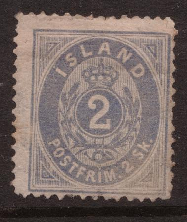
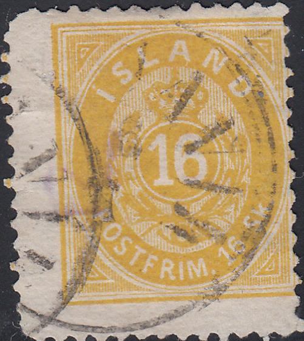
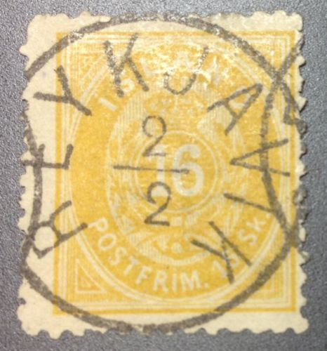
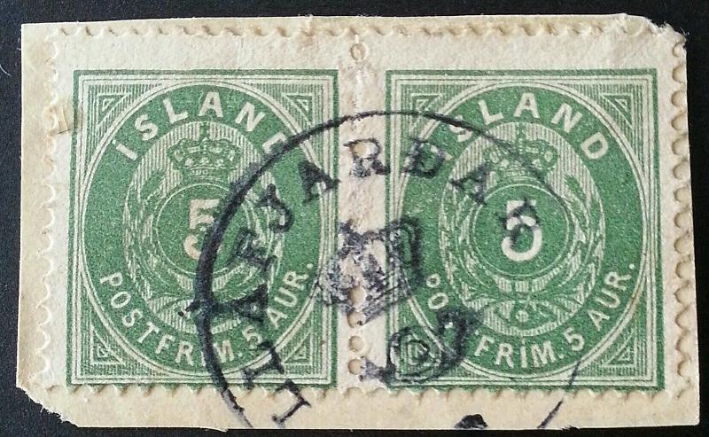
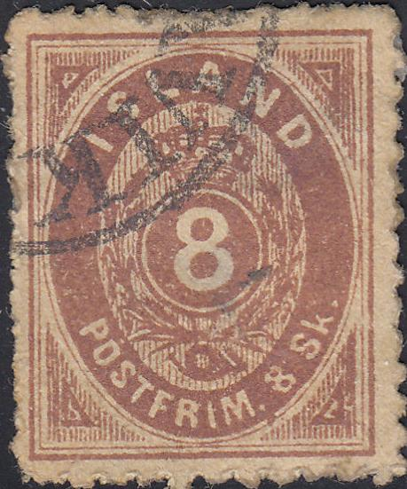
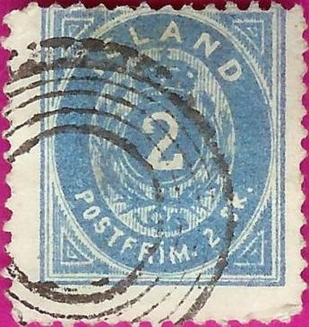
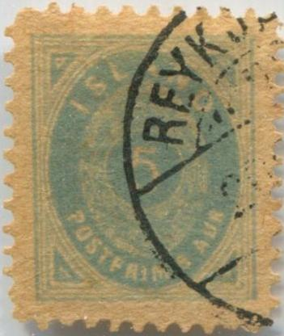
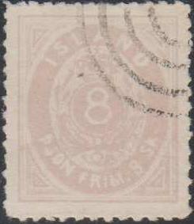
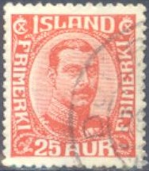

Island - Islande
Return To Catalogue - Island, miscellaneous - Denmark
Note: on my website many of the
pictures can not be seen! They are of course present in the
catalogue;
contact me if you want to purchase the catalogue.
There seems to be a lot of forged cancels and stamps cancelled to order of this country. I have no further information at this moment.
Value in 'skilling' inscription "POSTFRIM"
2 sk blue 3 sk grey 4 sk red 8 sk brown 16 sk yellow
These stamps have watermark Crown and perforation 14 x 13 1/2 or 12 1/2.
Value of the stamps |
|||
vc = very common c = common * = not so common ** = uncommon |
*** = very uncommon R = rare RR = very rare RRR = extremely rare |
||
| Value | Unused | Used | Remarks |
| 2 sk | RR | RR | Only exists with perforation 14 x 13 1/2. |
| 3 sk | RR | RR | Only exists with perforation 12 1/2. |
| 4 sk | *** | R | |
| 8 sk | R | RR | Only exists with perforation 14 x 13 1/2. |
| 16 sk | R | RR | |
Inscription "pJON. FRIM" (Official stamps)

4 sk green 8 sk lilac
These stamps have watermark 'Crown'.
Value of the stamps |
|||
vc = very common c = common * = not so common ** = uncommon |
*** = very uncommon R = rare RR = very rare RRR = extremely rare |
||
| Value | Unused | Used | Remarks |
| 4 sk | *** | *** | Perforation 12 1/2 or 13 1/2 x 14 |
| 8 sk | RR | RR | Perforation 13 1/2 x 14 |
Value in "AUR" (1875)
3 a orange 4 a red and grey 5 a blue 5 a green 6 a grey 10 a red 16 a brown 20 a violet 20 a blue 25 a brown and blue 40 a green 40 a lilac 50 a blue and red 100 a brown and lilac

(The two types of the 3 a, note the fatter inscriptions in the
second stamp)
These stamps have watermark 'Crown'. The perforation is 14 x 13 1/2 or 12 1/2. Some rare stamps with larger watermark 'Crown' exist (send to the UPU in Bern).
Value of the stamps |
|||
vc = very common c = common * = not so common ** = uncommon |
*** = very uncommon R = rare RR = very rare RRR = extremely rare |
||
| Value | Unused | Used | Remarks |
| 3 a | * | * | 1882 Two types; see above. Second type issued in 1900(?). |
| 4 a | ** | ** | 1900? |
| 5 a blue | RR | RR | |
| 5 a green | ** | * | 1882 |
| 6 a | *** | * | |
| 10 a | *** | * | |
| 16 a | *** | *** | |
| 20 a violet | ** | *** | |
| 20 a blue | *** | ** | 1882 |
| 25 a | *** | *** | 1900? |
| 40 a green | *** | R | |
| 40 a lilac | *** | *** | 1882 |
| 50 a | *** | *** | 1882 |
| 100 a | R | R | 1882 |
Surcharged "Prir"


(First image obtained from http://www.sandafayre.com)
5 a green
'3' on 5 a green ('3' in red, 'prir' in black)
The "Prir" overprint exists in two types.
Value of the stamps |
|||
vc = very common c = common * = not so common ** = uncommon |
*** = very uncommon R = rare RR = very rare RRR = extremely rare |
||
| Value | Unused | Used | Remarks |
| 5 a | RR | RR | |
| 3 on 5 a | RR | RR | |
Overprinted "1 GILDI '02-'03"
3 a yellow 4 a red and grey 5 a green 6 a grey 10 a red 16 a brown 20 a blue 25 a brown and bleu 40 a lilac 50 a blue and red 100 a brown and lilac
Value of the stamps |
|||
vc = very common c = common * = not so common ** = uncommon |
*** = very uncommon R = rare RR = very rare RRR = extremely rare |
||
| Value | Unused | Used | Remarks |
| 3 a | * | * | On first type: *** |
| 4 a | *** | *** | |
| 5 a | * | * | Overprint usually in red, black overprint: RR |
| 6 a | * | * | Overprint usually in red, black overprint: RR |
| 10 a | * | * | |
| 16 a | *** | *** | |
| 20 a | * | ** | Overprint usually in red, black overprint: RR |
| 25 a | ** | ** | Overprint usually in red, black overprint: RRR |
| 40 a | ** | ** | |
| 50 a | ** | *** | |
| 100 a | *** | *** | |

3 Sk grey with numeral cancel "1" in three concentric
rings (apparently not very common); Danish cancel(?).

Another concentric ring cancel, not sure if this one is genuine
or not. The outer two rings are closer together.


Typical "REYKJAVIK" circular date cancels, three
different types, note the "K" for example.

Crown cancels; crown in center and townname written around it.
In the genuine stamps, the dot over the "I" of "ISLAND" should be wedge-shaped and placed a little to the right (according to Album Weeds). The "A" of "ISLAND" should be cut off square (and not rounded, pointed, or cut off obliquely). More forgeries of Iceland can be found at: http://www.pherber.com/stamps/iceland/iceforg/index.html (website no longer available). The overprints have also been forged (sorry, no further information available right now). Examples of forgeries:
Spiro forgery(?):

Note the special cancel, often used on Spiro forgeries. Spiro forgeries exist of the Skilling values and the 5 aur blue stamp. Stamps with the above or dot cancels are forgeries.
Fournier forgeries(?):



Forgeries
The above forgeries were offered by Fournier for 1 Swiss Franc (5 values) in his 1914 pricelist as second choice forgeries. Note that there is no date inside the cancel in these forgeries. Some of them exists with "FAC-SIMILE" overprint at the back (from a Fournier Album). Note that these forgeries might actually have been made by someone else (Spiro? although the 2 Sk looks clearly different from the Spiro forgery shown above).
Part of a Fournier Album with Iceland forgeries.
A whole sheet of the 3 sk value of these forgeries. The
"REYKJAVIK" without date cancel never existed in
Iceland.
I have seen whole sheets consisting of 5x5 values of these forgeries. I have seen these sheets with the values 2 sk, 3 sk, 4 sk, 8 sk and 16 sk.
Forgery, most likely 'enhanced' by a 5-ring cancel.

Most likely another forgery, the "S" of
"POSTFRIM" is placed too high up. Also note the strange
cancels.
The forger Sperati has made a forgery of the 40 a green stamp. I do not know the distinguishing characteristics.

Sperati forgery of the 40 a value.
 

Forgeries of the "GILDI" overprint; the stamp and the
overprint appear to be forged. This forgery is possibly of
Italian origin. Next to it some unsurcharged forgeries, most
likely from the same source.

3 Sk imperforate. Yet with the space between "FRIM" and
"3" too large. It has the same cancel as one of the
above forgeries(?), although this cancel also appears to exist
genuinely.

Likely a forgery of the 16 sk stamp, the central "16"
is much squeezed. The word "FRIM" is too high up and
the "S" of "Sk" does not resemble the genuine
stamps.


Forgery with ring cancel and "4 Sk." clearly different
from a genuine stamp ("4" closed on top)

Forgery with central "8" too thin and bogus 4 ring
cancel.

Imperforate reprint of the 8 Sk stamp, 'Bilag til
Standard-Katalog 1942'.
1984 reprint with imperforate stamps.
3 a orange 4 a grey and red 5 a green 6 a brown 10 a red 16 a brown 20 a blue 25 a brown and green 40 a lilac 50 a grey and green 1 Kr blue and brown 2 Kr brown and blue 5 Kr brown and grey
These stamps have watermark 'Crown' and perforation 12 1/2.
Value of the stamps |
|||
vc = very common c = common * = not so common ** = uncommon |
*** = very uncommon R = rare RR = very rare RRR = extremely rare |
||
| Value | Unused | Used | Remarks |
| 3 a | * | * | |
| 4 a | * | c | |
| 5 a | * | c | |
| 6 a | * | * | |
| 10 a | * | * | |
| 16 a | * | * | |
| 20 a | * | * | |
| 25 a | * | * | |
| 40 a | ** | * | |
| 50 a | ** | ** | |
| 1 K | *** | *** | |
| 2 K | *** | *** | |
| 5 K | R | R | |
The value 16 a exists with '5 aur.' surcharge, the 20 a with '20 aur' surcharge and the 40 a with '20 aur.' surcharge.


1 a (=1 EYR) green and red 3 a brown 4 a grey and red 5 a dark green and light green 6 a grey and brown 10 a red 15 a red and green 16 a brown 20 a blue 25 a brown and green 40 a red and brown 50 a grey and lilac 1 Kr blue and brown 2 Kr brown and green 5 Kr brown and blue
These stamps have either watermark 'Crown' and perforation 12 1/2 (1907) or watermark 'Crosses' and perforation 14 x 14 1/2 (1915).
Value of the stamps |
|||
vc = very common c = common * = not so common ** = uncommon |
*** = very uncommon R = rare RR = very rare RRR = extremely rare |
||
| Value | Unused | Used | Remarks |
Watermark 'Crown' and perforation 12 1/2 (1907) |
|||
| 1 e | c | c | |
| 3 a | * | c | |
| 4 a | * | c | |
| 5 a | * | c | |
| 6 a | * | * | |
| 10 a | * | c | |
| 15 a | * | c | |
| 16 a | * | * | |
| 20 a | * | * | |
| 25 a | * | * | |
| 40 a | ** | * | |
| 50 a | ** | * | |
| 1 K | *** | *** | |
| 2 K | *** | *** | |
| 5 K | R | R | |
| Watermark 'Crosses' and perforation 14 x 14 1/2 (1915) | |||
| 1 e | c | c | |
| 3 a | c | c | |
| 4 a | * | c | |
| 5 a | * | c | |
| 6 a | * | * | |
| 10 a | * | c | |
| 20 a | * | * | |
The value 16 a exists with '5 aur.' surcharge, the 20 a with '20 aur' surcharge and the 40 a with '20 aur.' surcharge. The values 50 a and 5 K were surcharged with '30 aur.' and '50 aur.' respectively in 1925.
Example of a special cancel:
(Numeral cancel '47' in a circle, reduced size)
1 a (=1 EYR) green 3 a brown 4 a blue 6 a grey 15 a violet 25 a orange
These stamps have watermark 'Crown' and perforation 12 1/2.
Value of the stamps |
|||
vc = very common c = common * = not so common ** = uncommon |
*** = very uncommon R = rare RR = very rare RRR = extremely rare |
||
| Value | Unused | Used | Remarks |
| 1 e | c | c | |
| 3 a | * | * | |
| 4 a | * | c | |
| 6 a | * | * | |
| 15 a | * | c | |
| 25 a | * | * | |
(Note the special 'Tollur' cancel; this cancel was used on
parcels abroad)
The value 25 a exists with surcharge '2 kronur'.

5 a green 10 a red 20 a blue 50 a red 1 Kr yellow 2 Kr red 5 Kr brown
These stamps have watermark 'Crown' and perforation 12 1/2.
Value of the stamps |
|||
vc = very common c = common * = not so common ** = uncommon |
*** = very uncommon R = rare RR = very rare RRR = extremely rare |
||
| Value | Unused | Used | Remarks |
| 5 a | * | * | |
| 10 a | * | * | |
| 20 a | * | * | |
| 50 a | ** | ** | |
| 1 Kr | *** | *** | |
| 2 Kr | *** | *** | |
| 5 Kr | R | R | |
The values 50 a and 1 K exist with 'Kr.10' surcharge.

The value 2 Kr and 5 Kr exist with "Pjonusta" overprint (official stamp, 1922?).


1 e green and red 3 a brown 4 a grey and red 5 a green 6 a grey 7 a green 8 a brown 10 a red 10 a green (1922) 10 a brown (1932) 15 a violet 20 a blue 20 a brown (1922) 25 a brown and green 25 a red (1922) 30 a red and green 40 a lilac 40 a blue (1922) 50 a grey and lilac 1 K blue and brown 2 K brown and green 5 K brown and blue 10 K green and grey
These stamps were first issued in 1920 with watermark 'Crosses' and perforation 14 x 14 1/2.
Value of the stamps |
|||
vc = very common c = common * = not so common ** = uncommon |
*** = very uncommon R = rare RR = very rare RRR = extremely rare |
||
| Value | Unused | Used | Remarks |
| 1 e | c | c | |
| 3 a | c | c | |
| 4 a | c | c | |
| 5 a | * | c | |
| 8 a | c | c | |
| 10 a red | * | c | |
| 15 a | * | c | |
| 20 a blue | * | * | |
| 25 a brown and green | ** | * | |
| 30 a | * | * | |
| 40 a lilac | *** | ** | |
| 50 a | ** | * | |
| 1 K | *** | * | |
| 2 K | *** | *** | |
| 5 K | R | *** | |
In 1922 the 5 a was surcharged with "10 aur.". The value 40 a blue exist with red "EIN KRONA" surcharge (1926).
The value 10 a red exists with overprint "Pjonusta" and additional surcharge of 20 a (official stamp, 1922?).
The 30 a also exists with overprint "Zeppelin 1931".


{kind=link}
{kind=link}
{kind=link}
{kind=link}
{kind=link}
{kind=link}
{kind=link}
{kind=link}
{kind=link}
{kind=link}